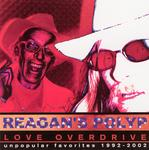

Home Artist links Label link

Reagan's Polyp - Love Overdrive
| Artist: | Reagan's Polyp |
| Title: | Love Overdrive |
| Label: | Trashfish TFEC31501-2 |
| Length(s): | 77 & 73 minutes |
| Year(s) of release: | 2002 |
| Month of review: | [02/2004] |
Sample this album in MP3
The music
Well, what can I say about this one. It is a collection of tracks recorded
in the years 1992 to 2002. To call the music progressive would be
stretching the definition. It is definitely different, though. A song like
Develop Revolutionary Conciousness has a certain Zappa-esque feel (even
stronger in Hunge Butter), mingled with punk, rock and a degree of
experimentalism that could easily be confused with mere loudness. Thumbelina
reminds me a bit of Insane Clown Posse, but probably for no reason at all,
especially since there's no rap. You Think It's Funny has the musicalesque
and non sensical feel Residents material has. Tinky The Talking Bear is,
well, err, what you would expect from a title like that with a bit of
craziness added (for extra effect, possibly). But what is most striking is the constant onslaught of tiring unseriousness which appears to be Reagan's Polyp main goal. This maybe okay for a couple of tracks, but after taking down the 77 minutes of disc one I needed a break -of several days- before I could summon the courage to start on the 73 minute second disc. Granted, this second disc, containing the newer material, is a lot more musical and less non-sensical, but the damage has been done.
Not a disc set to relish, this. Whereas Zappa and Residents have a certain musical base, Reagan's Polyp appears to mostly strive for lunacy of the kind that wears pretty fast. A lot faster than two and a half hours.
© Roberto Lambooy